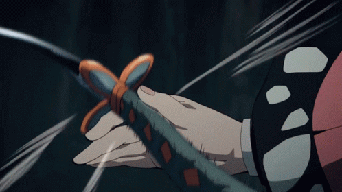

Somos una comunidad de personas dedicada a la VENTA, INTERCAMBIO y NOTICIAS del mundo de los videojuegos, anime, comics y tecnología. Nuestra idea nace de la necesidad de crear una comunidad activa en cada unos de los mundos que encierra el término GEEK sumado con una excelente atención al cliente, compartir conocimientos y asesoría responsable. Poco a poco nos hemos expandido a otras áreas como lo son los streams de videojuegos y eventos para la comunidad. En nuestra tienda, redes sociales y página web podrás encontrar productos, noticias, eventos y una comunidad de videojugadores de todas las edades e intereses..

MISIÓN: Brindar todo tipo de productos , prestar asesoría responsable a cada uno de nuestros clientes, obrefer productos de primera calidad, preparar y participar en torneos para el videojugador Colombiano.
VISIÓN: Ser la tienda líder y referente para los aficionados a la cultira geek de Colombia, donde podrán encontrar productos relacionados con los videojuegos, animes, comics, figuras,torneos y noticias.